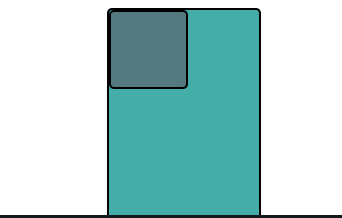
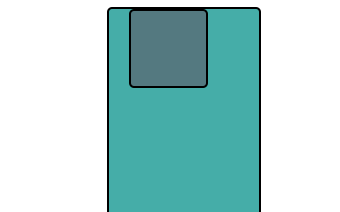
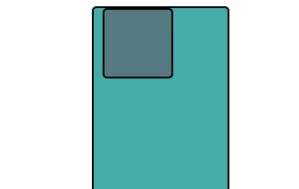
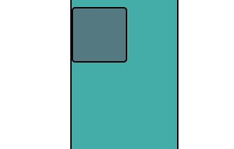

Finding the Right Position in CSS
Relative, Absolute, or Fixed?!
02/15/2105
Knowing the difference between relative, absolute, and fixed positioning is essential when getting your hands dirty with CSS in a project. Having a solid understanding of those concepts will save you a large amount of time; the time you would otherwise have spent on guessing and checking. So let’s get right into the nitty gritty details.
When an element is created the default positioning is called “static”. This is how the element is displayed without any positioning added to it. If we place a square in a rectangle, the static position would look as below.

When an element is set to “absolute”, it is positioned in relation to an element created before it that is NOT static. An image of this example is shown below. The rectangle in the image is also set to absolute, so in this case, our square is positioned in relation to the rectangle as we push it 20 pixels to the right. If the parent element IS static, then the square would look at the entire HTML document and position itself according to that.

“Relative” positioning is quite simple. When you set our square to move to the right 10 pixels, it moves to the right 10 pixels from where it originally was. The main thing to notice is that an element which is relatively positioned moves a certain assigned number of pixels from where it was, NOT in reference to another element!

Giving the square a “fixed” position simply freezes that image onto the screen. As you can see in the image below, I have scrolled down the length of the rectangle, yet the square remains intact, in the same exact spot. This is why we say the square is fixed in that position.
